Data science is one of the hottest professions of the decade, and the demand for data scientists who can analyze data and communicate results to inform data driven decisions has never been greater. This Professional Certificate from IBM will help anyone interested in pursuing a career in data science or machine learning develop career-relevant skills and experience.
It’s a myth that to become a data scientist you need a Ph.D. Anyone with a passion for learning can take this Professional Certificate – no prior knowledge of computer science or programming languages required – and develop the skills, tools, and portfolio to have a competitive edge in the job market as an entry level data scientist.
The program consists of 9 online courses that will provide you with the latest job-ready tools and skills, including open source tools and libraries, Python, databases, SQL, data visualization, data analysis, statistical analysis, predictive modeling, and machine learning algorithms. You’ll learn data science through hands-on practice in the IBM Cloud using real data science tools and real-world data sets.
Upon successfully completing these courses, you will have built a portfolio of data science projects to provide you with the confidence to plunge into an exciting profession in data science.
In addition to earning a Professional Certificate from Coursera, you’ll also receive a digital badge from IBM recognizing your proficiency in data science.
Applied Learning Project
This Professional Certificate has a strong emphasis on applied learning. Except for the first course, all other courses include a series of hands-on labs in the IBM Cloud that will give you practical skills with applicability to real jobs, including:
Tools: Jupyter / JupyterLab, GitHub, R Studio, and Watson Studio
Libraries: Pandas, NumPy, Matplotlib, Seaborn, Folium, ipython-sql, Scikit-learn, ScipPy, etc.
Projects: random album generator, predict housing prices, best classifier model, Predicting successful rocket landing, dashboa rd and interactive map 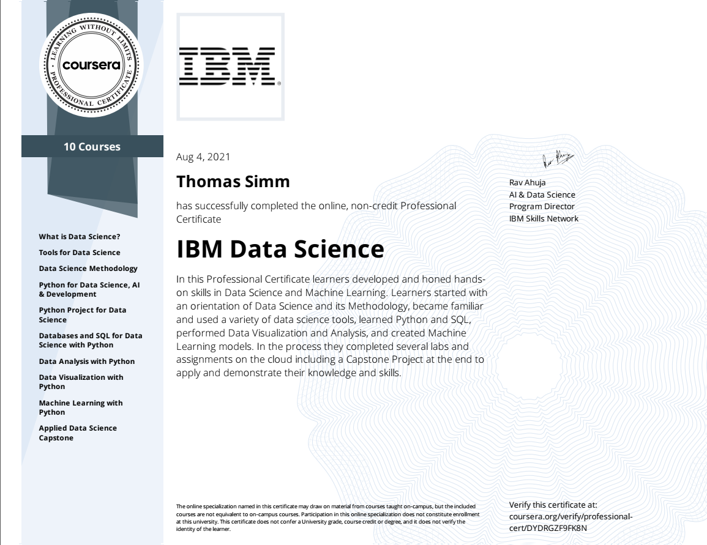
import pandas as pdimport numpy as npcolumns=['Course Title','Expected Time (h)','Rating (0-10)']#IBMds = pd.DataFrame(columns=columns)dat = [['What is Data Science?',9,6], ['Tools for Data Science',17,6], ['Data Science Methodology',8,6], ['Python for Data Science, AI & Development',17,6], ['Python Project for Data Science',6,6], ['Databases and SQL for Data Science with Python',18,6], ['Data Analysis with Python',20,6], ['Data Visualization with Python',13,6], ['Machine Learning with Python',21,6], ['Applied Data Science Capstone',47,6]]ss = pd.DataFrame(data = dat,columns=columns)ssTot=pd.DataFrame(data = [['IBM Data- Overview',ss['Expected Time (h)'].sum(),ss['Rating (0-10)'].mean()]],columns=columns)ss=ssTot.append(ss)ss.reset_index(inplace=True,drop=True)ss.head(12)
Prepare for a new career in the high-growth field of data analytics, no experience or degree required. Get professional training designed by Google and have the opportunity to connect with top employers. There are 380,000 U.S. job openings in data analytics with a $74,000 median entry-level salary.¹
Data analytics is the collection, transformation, and organization of data in order to draw conclusions, make predictions, and drive informed decision making.
Over 8 courses, gain in-demand skills that prepare you for an entry-level job. You’ll learn from Google employees whose foundations in data analytics served as launchpads for their own careers. At under 10 hours per week, you can complete the certificate in less than 6 months.
You’ll prepare yourself for jobs that include junior or associate data analyst, database administrator, and more. Upon completion of the certificate, you can directly apply for jobs with Google and over 150 U.S. employers, including Walmart, Best Buy, Astreya.
75% of Google Career Certificate Graduates in the United States report an improvement in their career trajectory (e.g. new job or career, promotion or raise) within 6 months of certificate completion²
¹US Burning Glass Labor Insight Report salary data (median with 0-5 years experience) and job opening data. Data for job roles relevant to featured programs (4/01/2021 - 3/31/22).
²Based on program graduate survey responses, United States 2021
Applied Learning Project
This program includes over 180 hours of instruction and hundreds of practice-based assessments, which will help you simulate real-world data analytics scenarios that are critical for success in the workplace. The content is highly interactive and exclusively developed by Google employees with decades of experience in data analytics. Through a mix of videos, assessments, and hands-on labs, you’ll get introduced to analysis tools and platforms and key analytical skills required for an entry-level job.
Skills you’ll gain will include: Data cleaning, problem solving, critical thinking, data ethics, and data visualization
Platforms and tools you will learn include: Presentations, Spreadsheets, SQL, Tableau and R Programming
In addition to expert training and hands-on projects, you’ll complete a case study that you can share with potential employers to showcase your new skill set. Learn concrete skills that top employers are hiring for right now.
columns=['Course Title','Expected Time (h)','Rating (0-10)']Googleds = pd.DataFrame(columns=columns)dat = [['Foundations: Data, Data, Everywhere',20,3], ['Ask Questions to Make Data-Driven Decisions',18,3], ['Prepare Data for Exploration',22,3], ['Process Data from Dirty to Clean',22,3], ['Analyze Data to Answer Questions',25,3], ['Share Data Through the Art of Visualization', 23,3], [ 'Data Analysis with R Programming',38,3], [ 'Google Data Analytics Capstone: Complete a Case Study',10,3] ]ss = pd.DataFrame(data = dat,columns=columns)ssTot=pd.DataFrame(data = [['Google Data- Overview',ss['Expected Time (h)'].sum(),ss['Rating (0-10)'].mean()]],columns=columns)ss=ssTot.append(ss)ss.reset_index(inplace=True,drop=True)ss.head(10)
Course Title
Expected Time (h)
Rating (0-10)
0
Google Data- Overview
178
3.0
1
Foundations: Data, Data, Everywhere
20
3.0
2
Ask Questions to Make Data-Driven Decisions
18
3.0
3
Prepare Data for Exploration
22
3.0
4
Process Data from Dirty to Clean
22
3.0
5
Analyze Data to Answer Questions
25
3.0
6
Share Data Through the Art of Visualization
23
3.0
7
Data Analysis with R Programming
38
3.0
8
Google Data Analytics Capstone: Complete a Cas...
10
3.0
Google IT Automation with Python Professional Certificate
This beginner-level, six-course certificate, developed by Google, is designed to provide IT professionals with in-demand skills – including Python, Git, and IT automation – that can help you advance your career.
Knowing how to write code to solve problems and automate solutions is a crucial skill for anybody in IT. Python, in particular, is now the most in-demand programming language by employers.
This program builds on your IT foundations to help you take your career to the next level. It’s designed to teach you how to program with Python and how to use Python to automate common system administration tasks. You’ll also learn to use Git and GitHub, troubleshoot and debug complex problems, and apply automation at scale by using configuration management and the Cloud.
This certificate can be completed in about 6 months and is designed to prepare you for a variety of roles in IT, like more advanced IT Support Specialist or Junior Systems Administrator positions. Upon completion, you can share your information with potential employers, like Walmart, Sprint, Hulu, Bank of America, Google (of course!), and more.
We recommend that you have Python installed on your machine. For some courses, you’ll need a computer where you can install Git or ask your administrator to install it for you.
Applied Learning Project
Learn how to program with Python with no previous knowledge of coding required and you’ll use Python to automate common system administration tasks
Learn to use Git and GitHub, to troubleshoot and debug complex problems
Apply automation at scale by using configuration management and the Cloud
Practice your technical skills with hands-on projects including a capstone project where you’ll use your new knowledge to solve a real-world IT problem
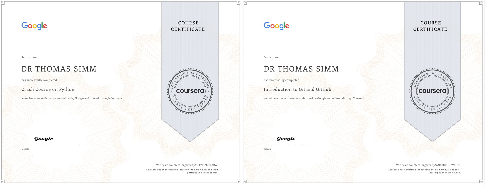 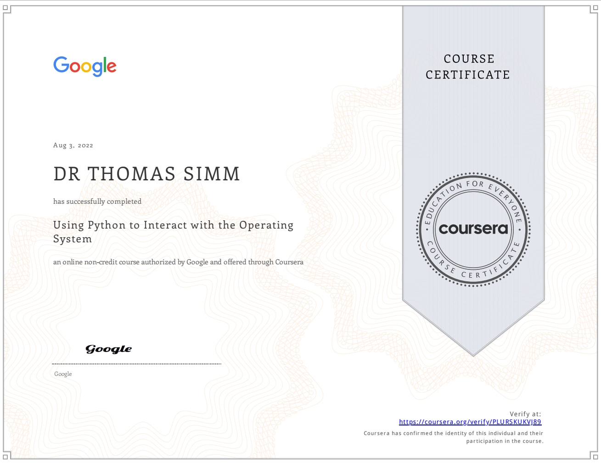
import pandas as pdcolumns=['Course Title','Expected Time (h)','Rating (0-10)','Percentage completed']IBMds = pd.DataFrame(columns=columns)dat=[['Crash Course on Python',32,8,100],['Using Python to Interact with the Operating System',31,6,100],['Introduction to Git and GitHub',19,8,100],['Troubleshooting and Debugging Technique',19, np.NaN ,0],['Configuration Management and the Cloud',18, np.NaN,0],['Automating Real-World Tasks with Python',13, np.NaN ,0]]lendat=np.shape(dat)[0]ss = pd.DataFrame(data = dat,columns=columns)pctot=int(np.sum(ss['Percentage completed'] * ss['Expected Time (h)']/(ss['Expected Time (h)'].sum())))ssTot=pd.DataFrame(data = [['Google Python- Overview',ss['Expected Time (h)'].sum(),(ss['Rating (0-10)'].mean(skipna=True)),pctot]],columns=columns)ss=ssTot.append(ss)ss.reset_index(inplace=True,drop=True)ss.head(10)
This Specialization is intended for a learner with no previous coding experience seeking to develop SQL query fluency. Through four progressively more difficult SQL projects with data science applications, you will cover topics such as SQL basics, data wrangling, SQL analysis, AB testing, distributed computing using Apache Spark, Delta Lake and more. These topics will prepare you to apply SQL creatively to analyze and explore data; demonstrate efficiency in writing queries; create data analysis datasets; conduct feature engineering, use SQL with other data analysis and machine learning toolsets; and use SQL with unstructured data sets.
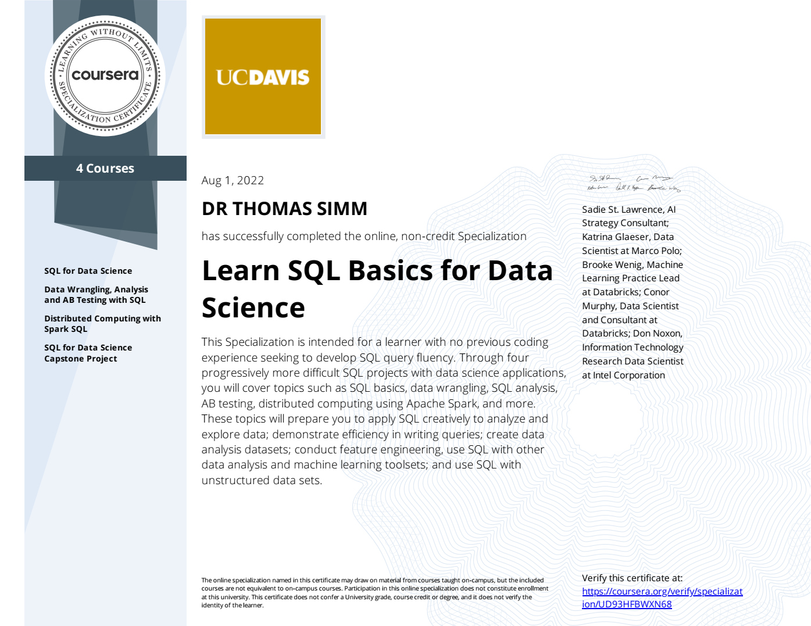
columns=['Course Title','Expected Time (h)','Rating (0-10)','Percentage completed']IBMds = pd.DataFrame(columns=columns)dat=[['SQL for Data Science',14,8,100],['Data Wrangling, Analysis and AB Testing with SQL',16,8,100],['Distributed Computing with Spark SQL',14,8,100],['SQL for Data Science Capstone Project',35, 8 ,100]]lendat=np.shape(dat)[0]ss = pd.DataFrame(data = dat,columns=columns)pctot=int(np.sum(ss['Percentage completed'] * ss['Expected Time (h)']/(ss['Expected Time (h)'].sum())))ssTot=pd.DataFrame(data = [['SQL Course- Overview',ss['Expected Time (h)'].sum(),(ss['Rating (0-10)'].mean(skipna=True)),pctot]],columns=columns)ss=ssTot.append(ss)ss.reset_index(inplace=True,drop=True)ss.head(10)
Course Title
Expected Time (h)
Rating (0-10)
Percentage completed
0
SQL Course- Overview
79
8.0
100
1
SQL for Data Science
14
8.0
100
2
Data Wrangling, Analysis and AB Testing with SQL
16
8.0
100
3
Distributed Computing with Spark SQL
14
8.0
100
4
SQL for Data Science Capstone Project
35
8.0
100
learnpython.org Python Development Course
https://learnpython.org/
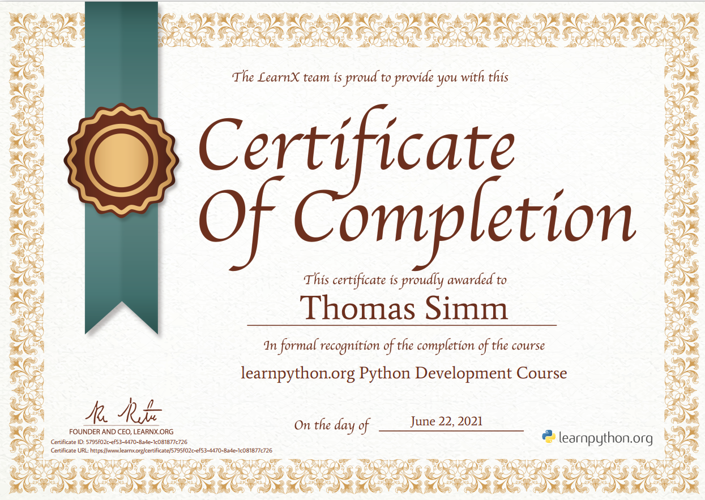
columns=['Course Title','Rating (0-10)']dat=[['Variables and Types',7],['Lists',7],['Basic Operators',7],['Strings',7],['Conditions',7],['Loops',7],['Functions',7],['Classes and Objects',7],['Dictionaries',7],['Modules and Packages',7],['List Comprehensions',7],['Regular Expressions',7],['Exception Handling',7],['Sets',7]]lendat=np.shape(dat)[0]ss = pd.DataFrame(data = dat,columns=columns)ss.head(lendat)
This Specialization is for learners wishing to dramatically change the way that they use Excel spreadsheets by unleashing the power to automate and optimize spreadsheets using Visual Basic for Applications (VBA). The first two courses will teach learners the basics of VBA through the use of dozens of educational screencasts and a series of quizzes and in-application programming assignments. Finally, in Part 3 of the course, learners will complete 3 “real world” and somewhat open ended projects, which are graded through peer review.
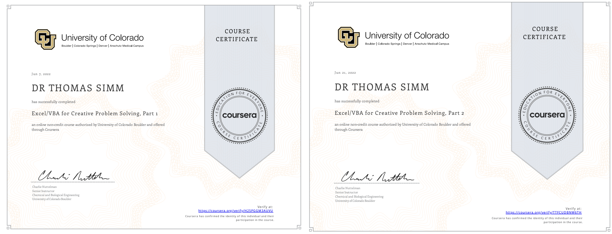
columns=['Course Title','Expected Time (h)','Rating (0-10)','Percentage completed']IBMds = pd.DataFrame(columns=columns)dat=[['Part 1',18,7,100],['Part 2',20,7,100],['Part 3',16,np.NaN,0]]lendat=np.shape(dat)[0]ss = pd.DataFrame(data = dat,columns=columns)pctot=int(np.sum(ss['Percentage completed'] * ss['Expected Time (h)']/(ss['Expected Time (h)'].sum())))ssTot=pd.DataFrame(data = [['Excel/VBA Course- Overview',ss['Expected Time (h)'].sum(),(ss['Rating (0-10)'].mean(skipna=True)),pctot]],columns=columns)ss=ssTot.append(ss)ss.reset_index(inplace=True,drop=True)ss.head(10)
Course Title
Expected Time (h)
Rating (0-10)
Percentage completed
0
Excel/VBA Course- Overview
54
7.0
70
1
Part 1
18
7.0
100
2
Part 2
20
7.0
100
3
Part 3
16
NaN
0
AWS Cloud Technical Essentials
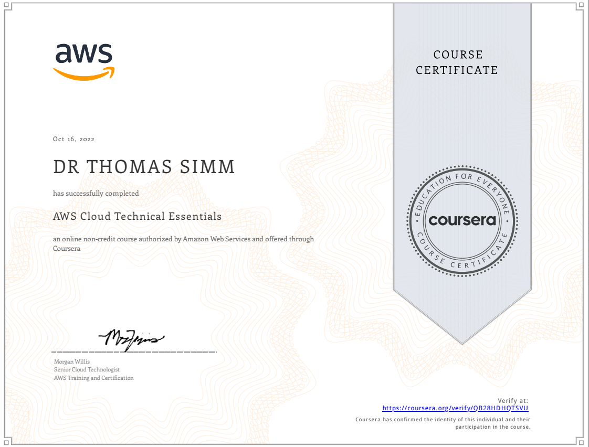
About this course
Are you in a technical role and want to learn the fundamentals of AWS? Do you aspire to have a job or career as a cloud developer, architect, or in an operations role? If so, AWS Cloud Technical Essentials is an ideal way to start. This course was designed for those at the beginning of their cloud-learning journey - no prior knowledge of cloud computing or AWS products and services required!
Throughout the course, students will build highly available, scalable, and cost effective application step-by-step. Upon course completion, you will be able to make an informed decision about when and how to apply core AWS services for compute, storage, and database to different use cases. You’ll also learn about cloud security with a review of AWS’ shared responsibility model and an introduction to AWS Identity and Access Management (IAM). And, you’ll know how AWS services can be used to monitor and optimize infrastructure in the cloud.
AWS Cloud Technical Essentials is a fundamental-level course and will build your competence, confidence, and credibility with practical cloud skills that help you innovate and advance your professional future. Enroll in AWS Cloud Technical Essentials and start learning the technical fundamentals of AWS today!
Note: This course was designed for learners with a technical background. If you are new to the cloud or come from a business background, we recommend completing AWS Cloud Practitioner Essentials (https://www.coursera.org/learn/aws-cloud-practitioner-essentials) before enrolling in this course.
Machine Learning
Fast AI
https://www.fast.ai/
Practical Deep Learning
A free course designed for people with some coding experience, who want to learn how to apply deep learning and machine learning to practical problems.
This free course is designed for people (and bunnies!) with some coding experience who want to learn how to apply deep learning and machine learning to practical problems.
Deep learning can do all kinds of amazing things. For instance, all illustrations throughout this website are made with deep learning, using DALL-E 2.
Practical Deep Learning for Coders 2022, recorded at the University of Queensland, covers topics such as how to:
Build and train deep learning models for computer vision, natural language processing, tabular analysis, and collaborative filtering problems
Create random forests and regression models
Deploy models
Use PyTorch, the world’s fastest growing deep learning software, plus popular libraries like fastai and Hugging Face
There are 9 lessons, and each lesson is around 90 minutes long. The course is based on our 5-star rated book, which is freely available online.
You don’t need any special hardware or software — we’ll show you how to use free resources for both building and deploying models. You don’t need any university math either — we’ll teach you the calculus and linear algebra you need during the course.
columns=['Course Title','Expected Time (h)','Rating (0-10)','Percentage completed']dat=[['Week 1',12,9,100],['Week 2',12,9,100],['Week 3',12,9,100],['Week 4',12,9,100],['Week 5',12,9,100],['Week 6',12,9,100],['Week 7',12,9,100],['Week 8',12,9,100],['Week 9',12,9,100],['Week 10',12,9,100],['Week 11',12,9,100]]lendat=np.shape(dat)[0]ss = pd.DataFrame(data = dat,columns=columns)pctot=int(np.sum(ss['Percentage completed'] * ss['Expected Time (h)']/(ss['Expected Time (h)'].sum())))ssTot=pd.DataFrame(data = [['Fast AI- Overview',ss['Expected Time (h)'].sum(),(ss['Rating (0-10)'].mean(skipna=True)),pctot]],columns=columns)ss=ssTot.append(ss)ss.reset_index(inplace=True,drop=True)ss.head(lendat)
Artificial intelligence (AI) is revolutionizing entire industries, changing the way companies across sectors leverage data to make decisions. To stay competitive, organizations need qualified AI engineers who use cutting-edge methods like machine learning algorithms and deep learning neural networks to provide data driven actionable intelligence for their businesses. This 6-course Professional Certificate is designed to equip you with the tools you need to succeed in your career as an AI or ML engineer.
You’ll master fundamental concepts of machine learning and deep learning, including supervised and unsupervised learning, using programming languages like Python. You’ll apply popular machine learning and deep learning libraries such as SciPy, ScikitLearn, Keras, PyTorch, and Tensorflow to industry problems involving object recognition, computer vision, image and video processing, text analytics, natural language processing (NLP), recommender systems, and other types of classifiers.
Through hands-on projects, you’ll gain essential data science skills scaling machine learning algorithms on big data using Apache Spark. You’ll build, train, and deploy different types of deep architectures, including convolutional neural networks, recurrent networks, and autoencoders.
In addition to earning a Professional Certificate from Coursera, you will also receive a digital badge from IBM recognizing your proficiency in AI engineering.
Applied Learning Project
Throughout the program, you will build a portfolio of projects demonstrating your mastery of course topics. The hands-on projects will give you a practical working knowledge of Machine Learning libraries and Deep Learning frameworks such as SciPy, ScikitLearn, Keras, PyTorch, and Tensorflow. You will also complete an in-depth Capstone Project, where you’ll apply your AI and Neural Network skills to a real-world challenge and demonstrate your ability to communicate project outcomes.
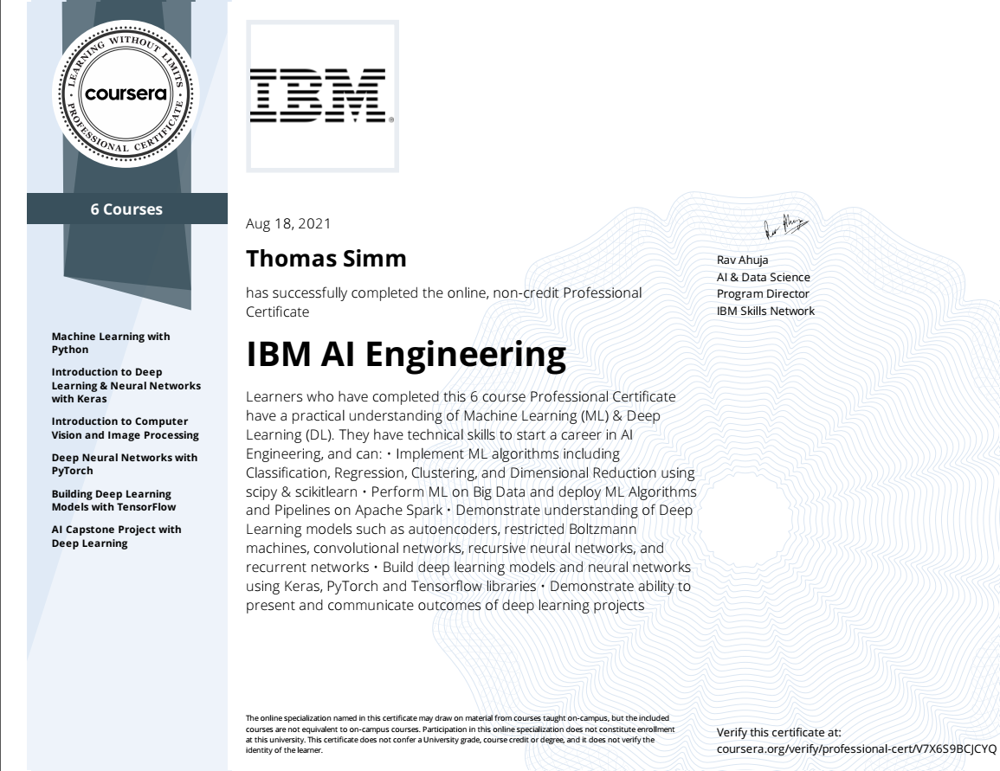
columns=['Course Title','Expected Time (h)','Rating (0-10)']IBMds = pd.DataFrame(columns=columns)dat = [['Machine Learning with Python',21,6], ['Introduction to Deep Learning & Neural Networks with Keras',8,6], ['Introduction to Computer Vision and Image Processing',21,6], ['Deep Neural Networks with PyTorch',31,6], ['Building Deep Learning Models with TensorFlow',13,6], ['AI Capstone Project with Deep Learning', 16,6]]ss = pd.DataFrame(data = dat,columns=columns)ssTot=pd.DataFrame(data = [['IBM AI Engineering- Overview',ss['Expected Time (h)'].sum(),ss['Rating (0-10)'].mean()]],columns=columns)ss=ssTot.append(ss)ss.reset_index(inplace=True,drop=True)ss.head(10)
The Machine Learning Specialization is a foundational online program created in collaboration between DeepLearning.AI and Stanford Online. This beginner-friendly program will teach you the fundamentals of machine learning and how to use these techniques to build real-world AI applications.
This Specialization is taught by Andrew Ng, an AI visionary who has led critical research at Stanford University and groundbreaking work at Google Brain, Baidu, and Landing.AI to advance the AI field.
This 3-course Specialization is an updated version of Andrew’s pioneering Machine Learning course, rated 4.9 out of 5 and taken by over 4.8 million learners since it launched in 2012.
It provides a broad introduction to modern machine learning, including supervised learning (multiple linear regression, logistic regression, neural networks, and decision trees), unsupervised learning (clustering, dimensionality reduction, recommender systems), and some of the best practices used in Silicon Valley for artificial intelligence and machine learning innovation (evaluating and tuning models, taking a data-centric approach to improving performance, and more.)
By the end of this Specialization, you will have mastered key concepts and gained the practical know-how to quickly and powerfully apply machine learning to challenging real-world problems. If you’re looking to break into AI or build a career in machine learning, the new Machine Learning Specialization is the best place to start.
Applied Learning Project
By the end of this Specialization, you will be ready to:
• Build machine learning models in Python using popular machine learning libraries NumPy and scikit-learn.
• Build and train supervised machine learning models for prediction and binary classification tasks, including linear regression and logistic regression.
• Build and train a neural network with TensorFlow to perform multi-class classification.
• Apply best practices for machine learning development so that your models generalize to data and tasks in the real world.
• Build and use decision trees and tree ensemble methods, including random forests and boosted trees.
• Use unsupervised learning techniques for unsupervised learning: including clustering and anomaly detection.
• Build recommender systems with a collaborative filtering approach and a content-based deep learning method.
The Deep Learning Specialization is a foundational program that will help you understand the capabilities, challenges, and consequences of deep learning and prepare you to participate in the development of leading-edge AI technology.
In this Specialization, you will build and train neural network architectures such as Convolutional Neural Networks, Recurrent Neural Networks, LSTMs, Transformers, and learn how to make them better with strategies such as Dropout, BatchNorm, Xavier/He initialization, and more. Get ready to master theoretical concepts and their industry applications using Python and TensorFlow and tackle real-world cases such as speech recognition, music synthesis, chatbots, machine translation, natural language processing, and more.
AI is transforming many industries. The Deep Learning Specialization provides a pathway for you to take the definitive step in the world of AI by helping you gain the knowledge and skills to level up your career. Along the way, you will also get career advice from deep learning experts from industry and academia. Applied Learning Project
By the end you’ll be able to
• Build and train deep neural networks, implement vectorized neural networks, identify architecture parameters, and apply DL to your applications
• Use best practices to train and develop test sets and analyze bias/variance for building DL applications, use standard NN techniques, apply optimization algorithms, and implement a neural network in TensorFlow
• Use strategies for reducing errors in ML systems, understand complex ML settings, and apply end-to-end, transfer, and multi-task learning
• Build a Convolutional Neural Network, apply it to visual detection and recognition tasks, use neural style transfer to generate art, and apply these algorithms to image, video, and other 2D/3D data
• Build and train Recurrent Neural Networks and its variants (GRUs, LSTMs), apply RNNs to character-level language modeling, work with NLP and Word Embeddings, and use HuggingFace tokenizers and transformers to perform Named Entity Recognition and Question Answering
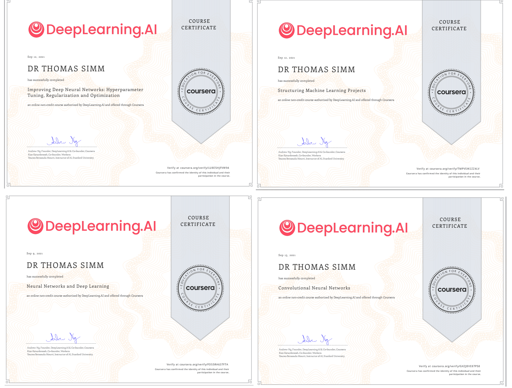
columns=['Course Title','Expected Time (h)','Rating (0-10)','Percentage completed']dat=[['Neural Networks and Deep Learning',23,8,100],['Improving Deep Neural Networks: Hyperparameter Tuning, Regularization and Optimization',22,8,100],['Structuring Machine Learning Projects',6,8,100],['Convolutional Neural Networks',35, 8 ,100],['Sequence Models',36, 8,20]]lendat=np.shape(dat)[0]ss = pd.DataFrame(data = dat,columns=columns)pctot=int(np.sum(ss['Percentage completed'] * ss['Expected Time (h)']/(ss['Expected Time (h)'].sum())))ssTot=pd.DataFrame(data = [['Deep Learning- Overview',ss['Expected Time (h)'].sum(),(ss['Rating (0-10)'].mean(skipna=True)),pctot]],columns=columns)ss=ssTot.append(ss)ss.reset_index(inplace=True,drop=True)ss.head(10)
TensorFlow is one of the most in-demand and popular open-source deep learning frameworks available today. The DeepLearning.AI TensorFlow Developer Professional Certificate program teaches you applied machine learning skills with TensorFlow so you can build and train powerful models.
In this hands-on, four-course Professional Certificate program, you’ll learn the necessary tools to build scalable AI-powered applications with TensorFlow. After finishing this program, you’ll be able to apply your new TensorFlow skills to a wide range of problems and projects. This program can help you prepare for the Google TensorFlow Certificate exam and bring you one step closer to achieving the Google TensorFlow Certificate.
Ready to deploy your models to the world? Learn how to go live with your models with the TensorFlow: Data and Deployment Specialization.
Looking to customize and build powerful real-world models for complex scenarios? Check out the TensorFlow: Advanced Techniques Specialization.
Applied Learning Project
In the DeepLearning.AI TensorFlow Developer Professional Certificate program, you’ll get hands-on experience through 16 Python programming assignments. By the end of this program, you will be ready to:
Build and train neural networks using TensorFlow
Improve your network’s performance using convolutions as you train it to identify real-world images
Teach machines to understand, analyze, and respond to human speech with natural language processing systems
Process text, represent sentences as vectors, and train a model to create original poetry!
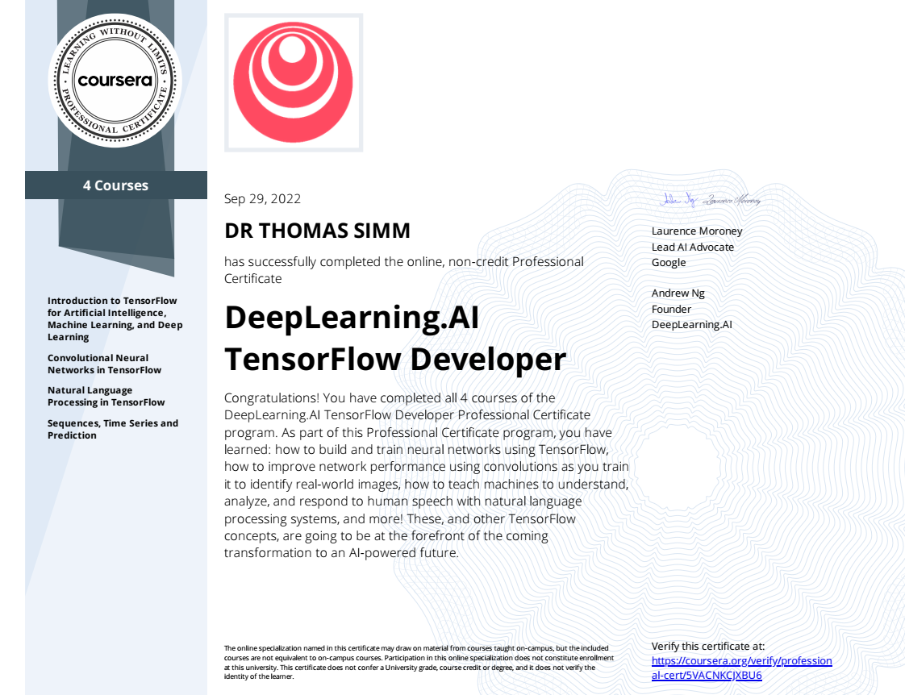
columns=['Course Title','Expected Time (h)','Rating (0-10)','Percentage completed']dat=[['Introduction to TensorFlow for Artificial Intelligence, Machine Learning, and Deep Learning',18,9,100],['Convolutional Neural Networks in TensorFlow',18,9,100],['Natural Language Processing in TensorFlow',25,8,100],['Sequences, Time Series and Prediction',24, 8 ,100]]lendat=np.shape(dat)[0]ss = pd.DataFrame(data = dat,columns=columns)pctot=int(np.sum(ss['Percentage completed'] * ss['Expected Time (h)']/(ss['Expected Time (h)'].sum())))ssTot=pd.DataFrame(data = [['Tensorflow Developer- Overview',ss['Expected Time (h)'].sum(),(ss['Rating (0-10)'].mean(skipna=True)),pctot]],columns=columns)ss=ssTot.append(ss)ss.reset_index(inplace=True,drop=True)ss.head(10)
Expand your knowledge of the Functional API and build exotic non-sequential model types. Learn how to optimize training in different environments with multiple processors and chip types and get introduced to advanced computer vision scenarios such as object detection, image segmentation, and interpreting convolutions. Explore generative deep learning including the ways AIs can create new content from Style Transfer to Auto Encoding, VAEs, and GANs.
Applied Learning Project
In this Specialization, you will gain practical knowledge of and hands-on training in advanced TensorFlow techniques such as style transfer, object detection, and generative machine learning.
Course 1: Understand the underlying basis of the Functional API and build exotic non-sequential model types, custom loss functions, and layers.
Course 2: Learn how optimization works and how to use GradientTape and Autograph. Optimize training in different environments with multiple processors and chip types.
Course 3: Practice object detection, image segmentation, and visual interpretation of convolutions.
Course 4: Explore generative deep learning and how AIs can create new content, from Style Transfer through Auto Encoding and VAEs to Generative Adversarial Networks.
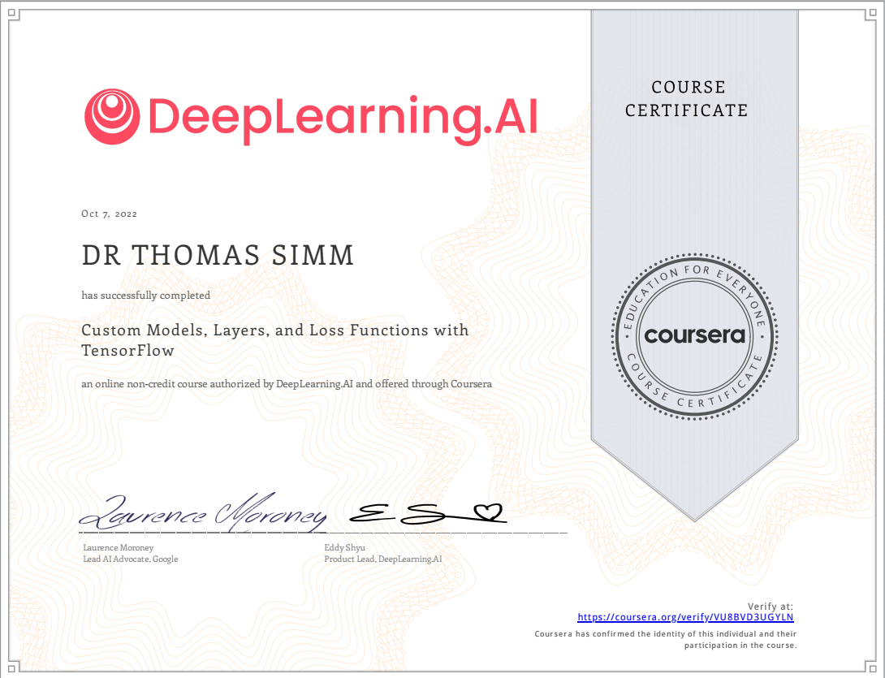 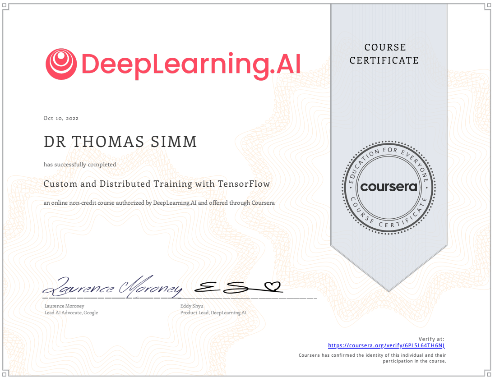
columns=['Course Title','Expected Time (h)','Rating (0-10)','Percentage completed']dat=[['Custom Models, Layers, and Loss Functions with TensorFlow',37,9,100],['Custom and Distributed Training with TensorFlow',29,9,100],['Advanced Computer Vision with TensorFlow',29, 8,25],['Generative Deep Learning with TensorFlow',27, 0 ,0]]lendat=np.shape(dat)[0]ss = pd.DataFrame(data = dat,columns=columns)pctot=int(np.sum(ss['Percentage completed'] * ss['Expected Time (h)']/(ss['Expected Time (h)'].sum())))ssTot=pd.DataFrame(data = [['TensorFlow: Advanced Techniques Specialization- Overview',ss['Expected Time (h)'].sum(),(ss['Rating (0-10)'].mean(skipna=True)),pctot]],columns=columns)ss=ssTot.append(ss)ss.reset_index(inplace=True,drop=True)ss.head(10)
This Specialization is intended for machine learning researchers and practitioners who are seeking to develop practical skills in the popular deep learning framework TensorFlow.
The first course of this Specialization will guide you through the fundamental concepts required to successfully build, train, evaluate and make predictions from deep learning models, validating your models and including regularisation, implementing callbacks, and saving and loading models.
The second course will deepen your knowledge and skills with TensorFlow, in order to develop fully customised deep learning models and workflows for any application. You will use lower level APIs in TensorFlow to develop complex model architectures, fully customised layers, and a flexible data workflow. You will also expand your knowledge of the TensorFlow APIs to include sequence models.
The final course specialises in the increasingly important probabilistic approach to deep learning. You will learn how to develop probabilistic models with TensorFlow, making particular use of the TensorFlow Probability library, which is designed to make it easy to combine probabilistic models with deep learning. As such, this course can also be viewed as an introduction to the TensorFlow Probability library.
Prerequisite knowledge for this Specialization is python 3, general machine learning and deep learning concepts, and a solid foundation in probability and statistics (especially for course 3)..
Applied Learning Project
Within the Capstone projects and programming assignments of this Specialization, you will acquire practical skills in developing deep learning models for a range of applications such as image classification, language translation, and text and image generation.
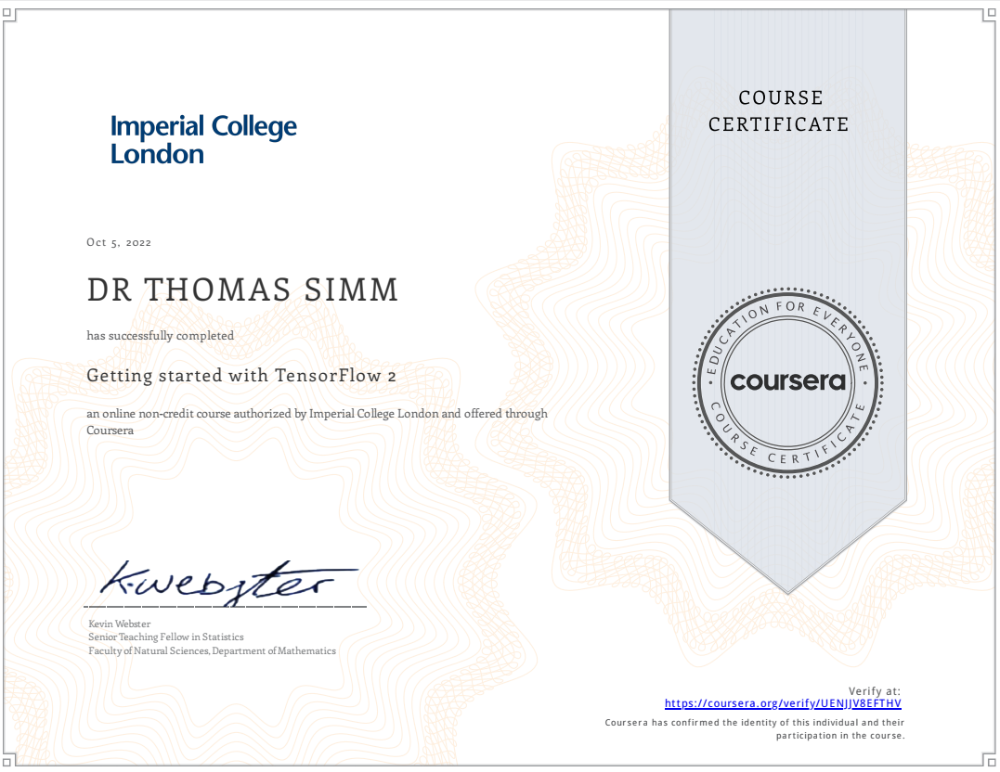
columns=['Course Title','Expected Time (h)','Rating (0-10)','Percentage completed']dat=[['Getting started with TensorFlow 2',26,8,100],['Customising your models with TensorFlow 2',27,7,75],['Probabilistic Deep Learning with TensorFlow 2',53, 0,0]]lendat=np.shape(dat)[0]ss = pd.DataFrame(data = dat,columns=columns)pctot=int(np.sum(ss['Percentage completed'] * ss['Expected Time (h)']/(ss['Expected Time (h)'].sum())))ssTot=pd.DataFrame(data = [['TensorFlow 2 for Deep Learning Specialization',ss['Expected Time (h)'].sum(),(ss['Rating (0-10)'].mean(skipna=True)),pctot]],columns=columns)ss=ssTot.append(ss)ss.reset_index(inplace=True,drop=True)ss.head(10)